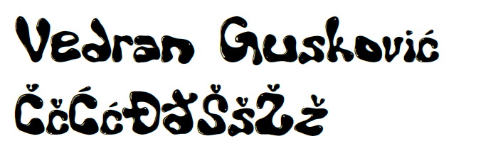
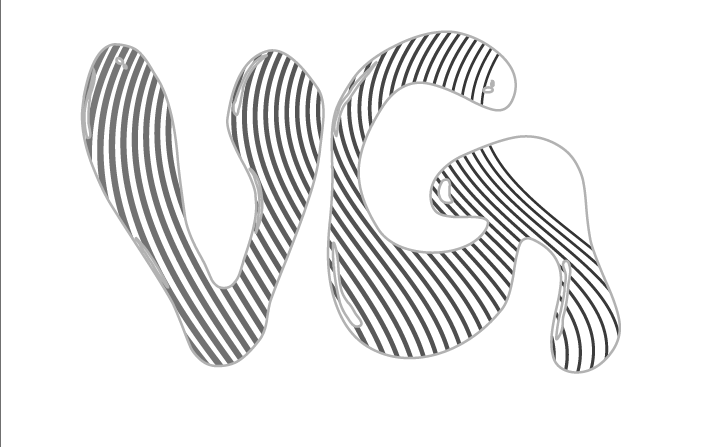
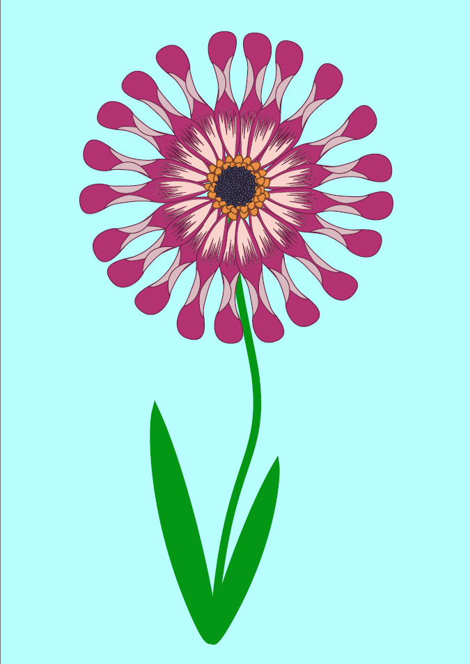
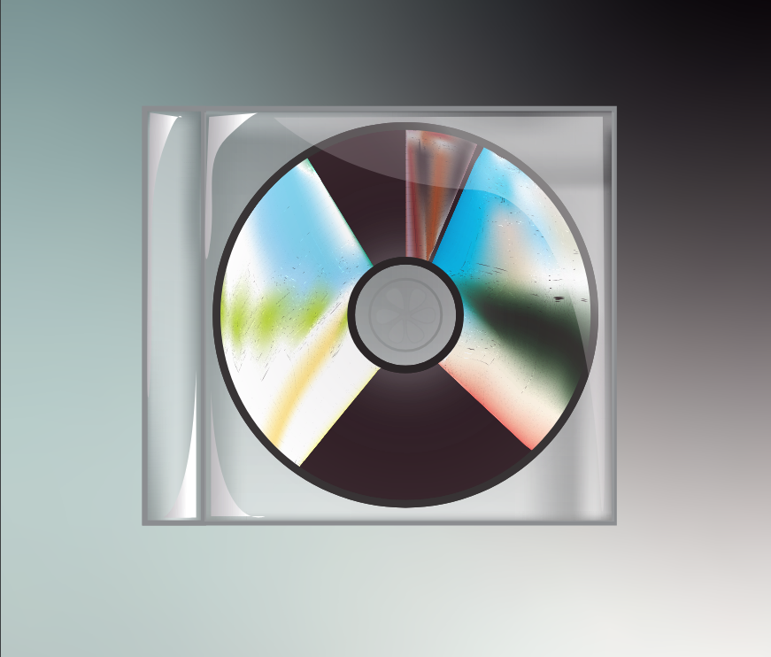
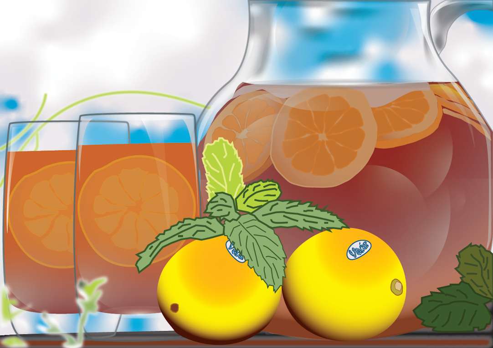
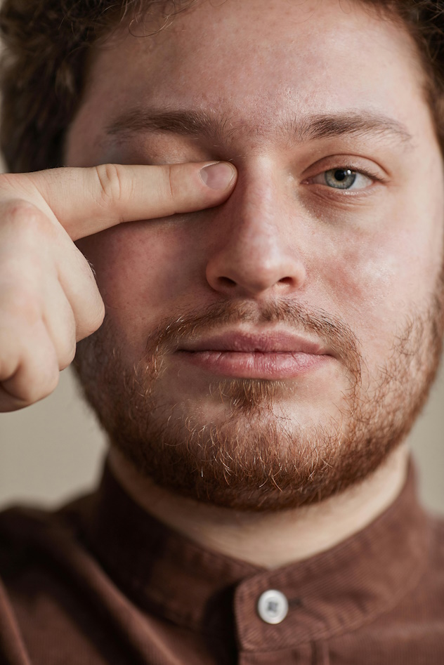
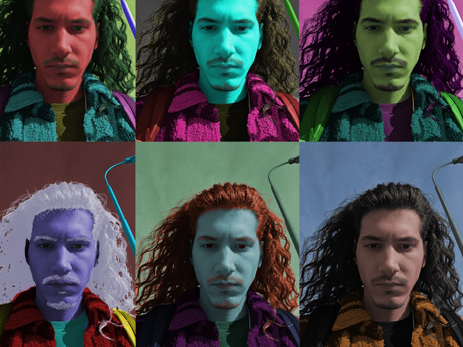
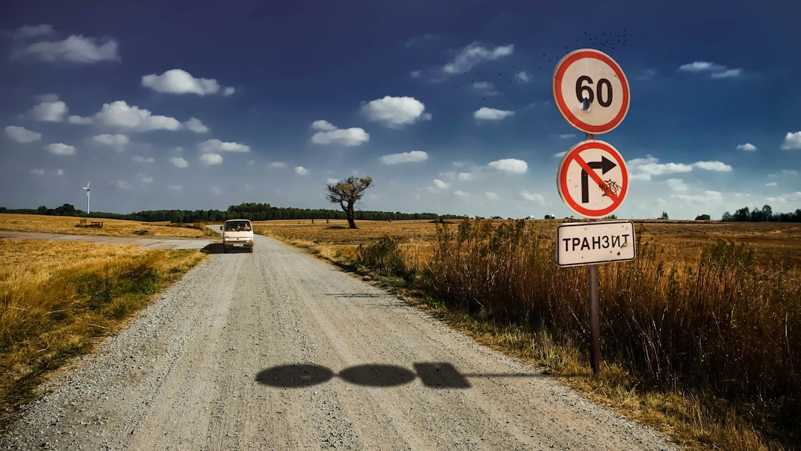
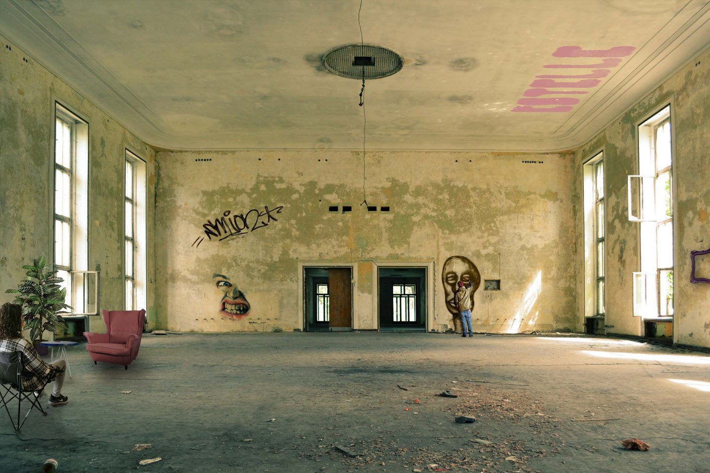

Vježba 2: Bezierova krivulja

Vježba 3: Boja, tranformacije

Vježba 4: Gradijenti, transparencija

Projektni zadatak 1

Vježba 5: Retuširanje

Vježba 6: Koloriranje

Vježba 7: Fotomontaža

Projektni zadatak 2

Vježba 8: Cinemagraf

Vježba 9: Video obrada